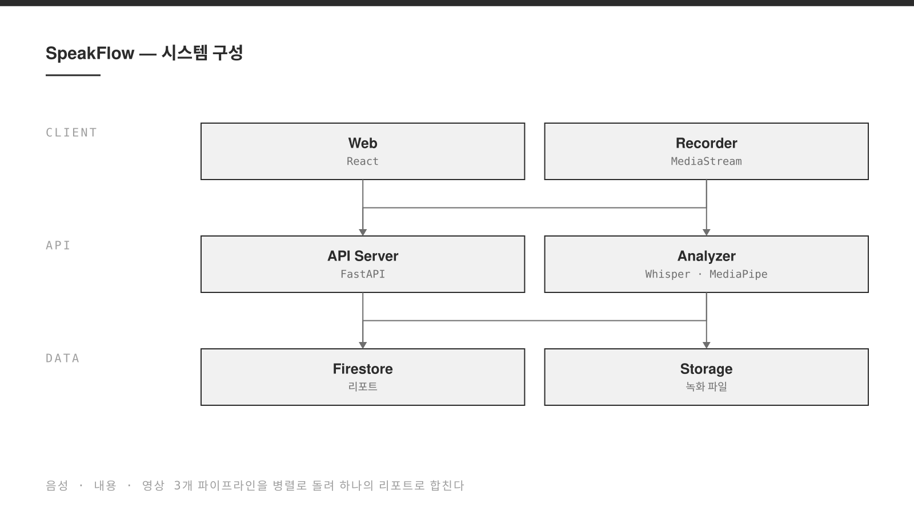

발표 영상을 올리면 음성, 내용, 영상 세 가지 데이터를 각각 분석해 하나의 피드백 리포트로 돌려주는 AI 발표 코치다. 말의 속도와 휴지, 원고와 전사 텍스트, 자세와 시선을 따로 본 뒤 합쳐서 보여준다. 2025년 2학기 종합설계 과목의 5인 팀 프로젝트로 만들었고, 프론트엔드와 백엔드 모두 실제로 배포했다.
- 기간
- 2025.09 — 2025.12
- 역할
- 백엔드 · 분석 파이프라인 · 배포
- 팀
- 5명 · 종합설계 CSC4004
- 스택
- React, Vite, TypeScript, Tailwind CSS, Firebase, FastAPI, Python, MediaPipe, PyTorch
- 배포
- 프론트엔드 Vercel · 백엔드 Render
- 링크
- 데모 · GitHub 저장소
Problem
발표 연습에서 가장 얻기 어려운 것은 피드백이다. 혼자 연습하면 자기 말이 빠른지 느린지, 시선이 어디로 가는지 알 수 없다. 기존 도구는 대개 한 축만 본다. 음성만 보거나, 원고만 보거나, 영상만 본다. 그런데 발표가 잘못되는 이유는 보통 한 축이 아니라 세 축이 어긋나는 데 있다.
Approach
분석을 세 갈래로 나누고 결과를 마지막에 합쳤다. 음성에서는 발화 속도와 휴지 구간을, 내용에서는 전사 텍스트와 원고의 차이를, 영상에서는 자세와 시선 방향을 본다. 각 분석기는 독립적으로 실행되므로 하나가 실패해도 나머지 결과는 그대로 나온다.
배포는 비용 제약을 먼저 놓고 설계했다. 프론트엔드는 Vercel, 분석 서버는 Render, 인증과 데이터 저장은 Firebase로 나눠 각 무료 티어 안에 들어가도록 했다.
Result
프론트엔드와 백엔드 모두 배포해 실제 주소로 접근할 수 있는 상태까지 만들었다. 다만 영상 분석에는 최소 4~8GB 메모리가 필요했고, 그 사양의 인스턴스는 월 85~175달러 수준이었다. 예산 안에서는 감당할 수 없어, 영상 분석 처리는 로컬에서 수행하고 배포 환경에서는 분석 결과를 확인하는 방식으로 범위를 조정했다.
제약을 숨기지 않고 저장소에 그대로 기록해 두었다. 무엇이 동작하고 무엇이 동작하지 않는지를 먼저 밝히는 편이, 팀 밖의 사람이 프로젝트를 이해하는 데 훨씬 유리했다.

Implementation
분리된 분석 파이프라인
분석 서버는 업로드된 영상을 받아 음성 트랙과 프레임을 나눈 뒤 세 분석기를 각각 실행한다. 분석기는 서로를 참조하지 않으므로 하나를 교체하거나 끄더라도 나머지 경로는 그대로 동작한다.
자세와 시선 추적
영상 축은 프레임마다 신체 랜드마크를 추출해 자세가 흔들리는 구간과 시선이 청중을 벗어난 구간을 찾는다. 프레임 단위 처리라 연산량이 가장 크고, 결국 이 부분이 배포 사양을 결정했다.
세 서비스로 나눈 배포
무료 티어 한도가 서로 다르기 때문에, 정적 자산과 분석 연산과 데이터 저장을 한 곳에 두지 않았다. 로컬에서는 두 개의 서버를 각각 띄우고 환경 변수로 주소만 연결한다.
# 분석 서버 cd BE && python -m venv .venv && source .venv/bin/activate pip install -r requirements.txt uvicorn main:app --reload --host 0.0.0.0 --port 8000 # 프론트엔드 cd FE && npm install npm run dev -- --host 0.0.0.0 --port 5173
Retrospect
- 가장 무거운 기능의 자원 요구량을 먼저 계산했어야 했다. 기능을 다 만든 뒤에야 배포 비용을 알았다.
- 분석기를 서로 독립시켜 둔 덕분에, 영상 축을 로컬로 물릴 때 나머지를 건드리지 않아도 됐다.
- 무료 티어를 전제로 서비스를 쪼개는 것은 비용에는 유리했지만 디버깅 지점은 세 배로 늘었다.
- 동작하지 않는 부분을 문서에 먼저 적어 두는 편이, 나중에 설명하는 것보다 항상 낫다.